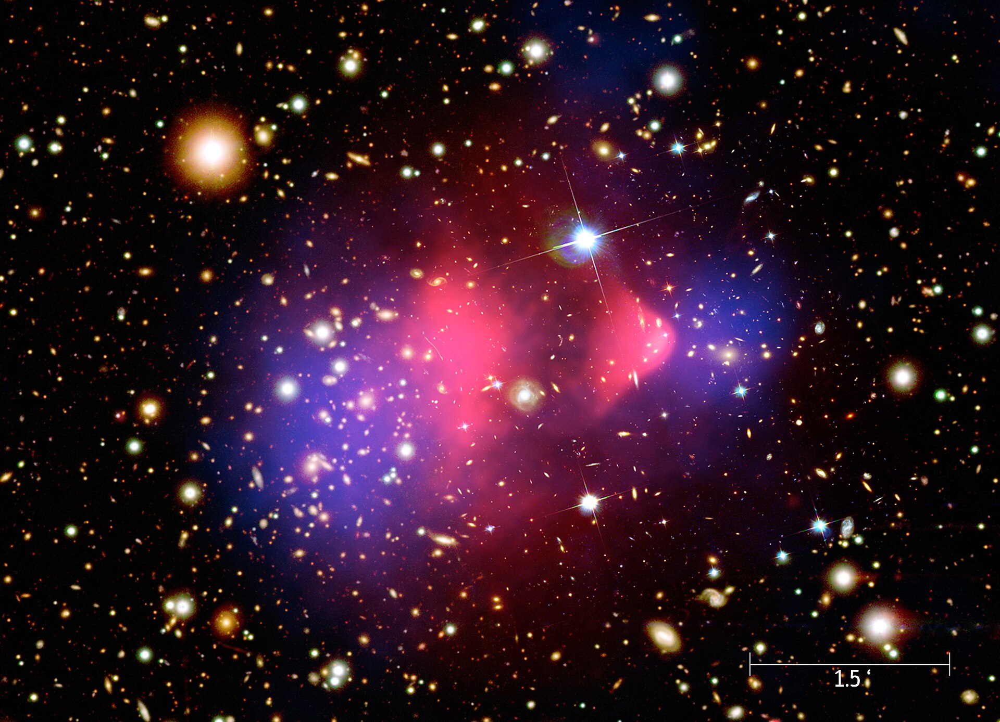
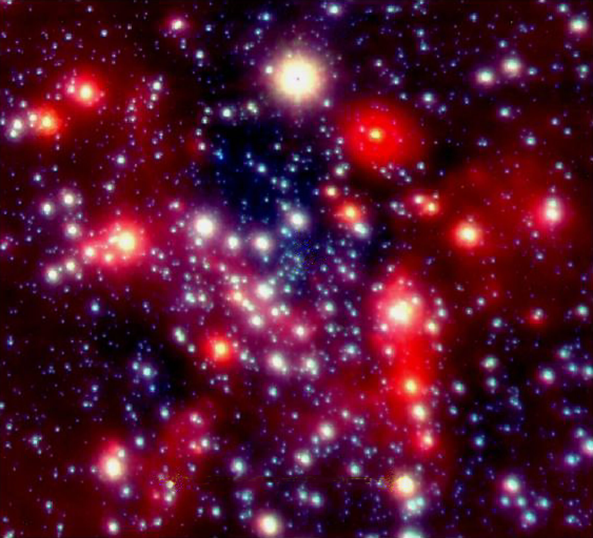
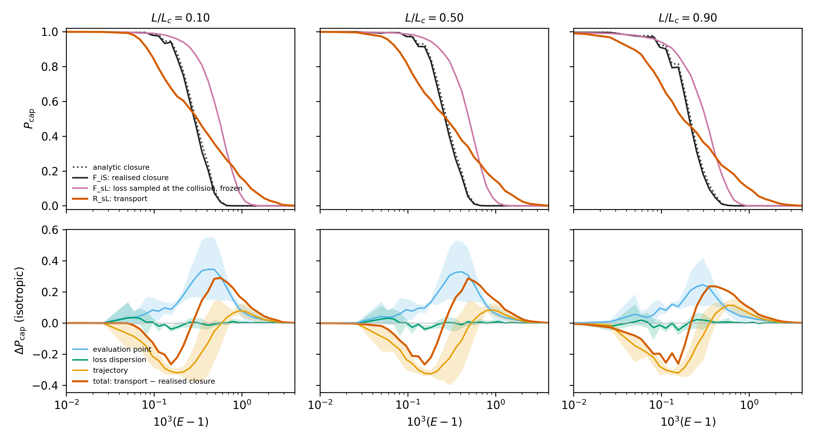
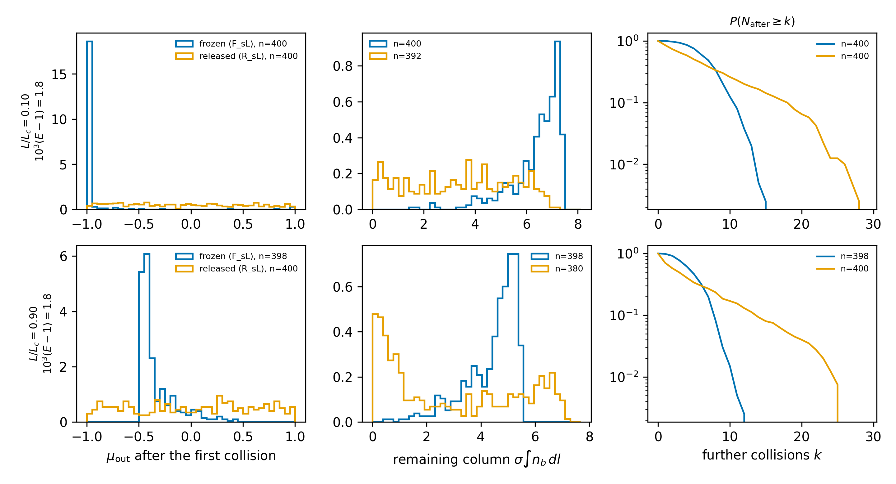
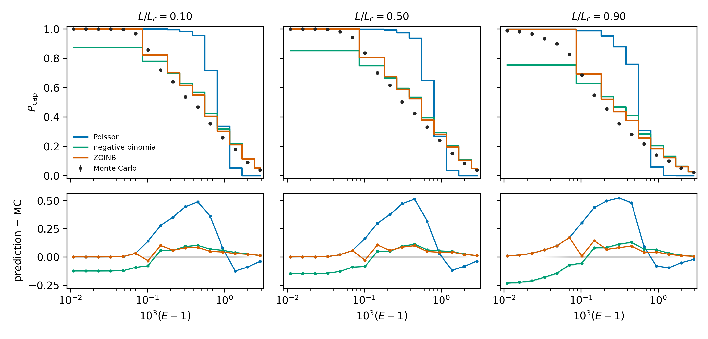
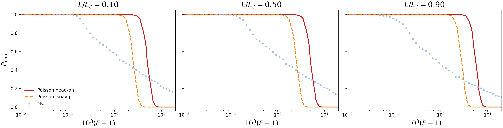
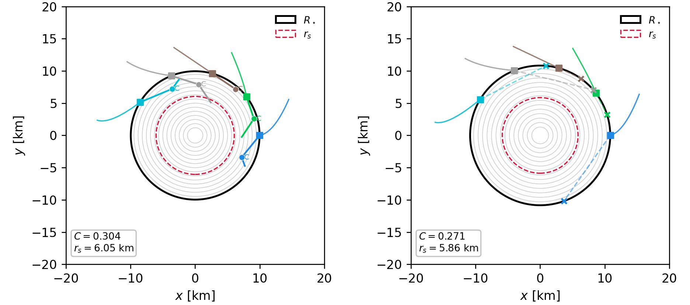
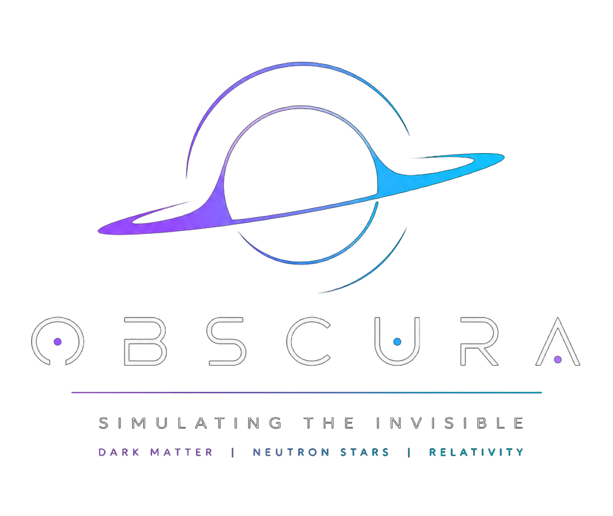

Dark matter in neutron stars
Simulating
the invisible
How a neutron star captures dark matter one collision at a time — and what state the captured particles end up in.
Outline
Two papers, one code
I
OBSCURA: every collision
A relativistic Monte Carlo of dark-matter capture. Each particle follows the interior geodesic of the star, collides, changes direction and energy — and the code reduces exactly to the optical-depth closure when that extra physics is switched off. What does the closure miss?
de Lima & Rueda, A Monte Carlo relativistic framework for dark matter capture by neutron stars (in preparation)
II
Degeneracy before self-gravity
After capture: is the population a classical thermal tracer, a degenerate Fermi gas, or a self-gravitating dark component? Two independent diagnostics — S for gravity, Θ for statistics — and a map of where their thresholds fall.
de Lima & Rueda, Degeneracy Before Self-Gravity: Dark Matter Regimes in Neutron Stars (draft)
The premise
A neutron star is a dark-matter detector
As it crosses the Galaxy, a neutron star sweeps up dark matter: its potential well focuses the particles, its matter stops them.
A deep well
Escape speed at the surface √(2GM/R) = 0.59 c for 1.4 M☉ and 11.7 km. Slow halo particles are bent toward the star from a thousand radii away.
A dense target
nb ≈ 5×10³⁸ cm⁻³ at the centre: with σ = 10⁻⁴⁴ cm² a particle meets τ ≈ 6–9 collisions in one crossing.
An old, cold star
What accumulates can heat it, collapse into a black hole, or change its structure — if we know how much is captured and in what state.
I
Part one
OBSCURA:
every collision
A relativistic Monte Carlo that follows each dark-matter particle through the interior metric of the star, collision by collision — and recovers the optical-depth closure when its extra physics is switched off.
1933 – 2006
Matter we only see through gravity

NASA/CXC/M. Weiss · public domain2006, the Bullet Cluster: the lensing mass (blue) is offset from the X-ray gas (pink). Today: about 85% of the matter, a local density ρχ ≈ 0.4 GeV cm⁻³ — and no idea what it is made of.
The dark-matter background
Two ways to fill the halo
Standard halo · Maxwell–Boltzmann
The usual WIMP benchmark: particles of GeV to TeV, a few hundred km/s, isotropic. Used for the Maxwell–Boltzmann results of Part II.
RAR fermions · truncated Fermi–Dirac
Self-gravitating fermions in general-relativistic equilibrium: a degenerate core at the Galactic centre and a Boltzmann halo. Rotation curves and the S-stars point to ~60–380 keV; we take 100 keV.

ESO · CC BY 4.0Forty years of capture
From the Sun to neutron stars
1985
Press & Spergel
capture of WIMPs by the Sun
1987
Gould
the capture-rate formalism
1989
Goldman & Nussinov
WIMPs and neutron stars
2008–10
Kouvaris; Kouvaris & Tinyakov
heating by annihilation; collapse to a black hole
2017
Baryakhtar et al.
dark kinetic heating
2020
Bell et al.
relativistic capture with Pauli blocking, opacity, multiple scattering
2026
OBSCURA
collision histories through the interior metric
Gravitational focusing
The star looks a thousand times wider
Supply × probability
What reaches the star, and what stays
ℰ and ℒ are the energy and angular momentum per unit mass, measured at infinity; between collisions they are conserved, and the particle follows the interior geodesic.
Captured
after a collision the particle can no longer reach infinity: γ is its Lorentz factor for a static observer at the collision, eν/2 the lapse there.
The optical-depth closure
A Poisson count and three frozen choices
The closure of Sirvente & Rueda (submitted): relativistic and covariant. OBSCURA was built to test it, not to replace it — and reduces to it exactly.
1 · Frozen trajectory
Collisions change the energy, never the path: every particle keeps the incident geodesic.
2 · Deterministic loss
Each collision removes a fixed amount — head-on or the isotropic mean — so capture needs exactly Nmin of them.
3 · Evaluated at the surface
Nmin is computed with the lapse at R, wherever the collision actually happens.
100 keV on a neutron of 939 MeV
Capture decided in a narrow window
For mχ ≪ mn each collision removes a fraction ~2(mχ/mn)(γ + 1) ≈ 5×10⁻⁴ at most, while it must lose up to a per cent of it: tens of collisions.
Deeper in the star the lapse is smaller and the same collision removes more of ℰ: Nmin halves at the centre.
Slide the mass to the GeV range: one collision suffices — the WIMP limit.
The transport
One history, collision by collision
- Draw a target optical depth −ln U and fly along the interior geodesic with (ℰ, ℒ) conserved, accumulating dτ = nbσ dl (step R/4096).
- At the collision, an elastic two-body event on a neutron at rest, isotropic in the centre of mass: energy loss and deflection from the same angles.
- New γ and direction → new (ℰ, ℒ): the orbit is rebuilt.
- Captured if ℰ < 1; escaped if it leaves unbound; otherwise fly again.
Every approximation has a name
GEO-8 interior tetrad transport · COL-3 relativistic event · PAULI-1 blocked rate · STAT-1 Wilson intervals — each documented, cited in the source, and switchable.
Switch off the release, the sampling and the local lapse, and the Monte Carlo is the closure.
Three modes, one star · live
Releasing the trajectory broadens the transition
Reduction
Switch it off, and it is the closure
| switch off | recovers |
|---|---|
| trajectory update at collisions | the incident geodesic of τ |
| sampled energy loss | the recurrence behind Nmin |
| loss at the collision radius | the cascade at the surface lapse |
| histories beyond one crossing | the single-crossing convention |
| neutrons at rest in the rate | not switched: up to 0.035 in Pcap |
Nmin
every capture of the realised closure happens at exactly Nmin
0.2%
mean count vs σ∫nbdl by an independent quadrature
2.8σ
largest deviation of Pcap from the Poisson tail, 123 points × 5000 histories
10⁻¹⁰
a sampled event vs an independent closed form; head-on = one step of the recurrence
The decomposition · 2³ × 2 controls, order-averaged
Two effects of opposite sign

| switch | mean ΔPcap |
|---|---|
| ● evaluation point | +0.09 … +0.14 |
| ● loss dispersion | |·| < 0.01 |
| ● trajectory | −0.09 … −0.11 |
| total (signed mean) | +0.00 … +0.03 |
| total, RMS over the transition | 0.16 … 0.17 |
They nearly cancel in the mean but not in shape: the first shifts the transition up, the second broadens it. Single energies differ by up to ±0.29.
An attribution with interactions, not three independent corrections.
Mechanism · what the first collision does
Half the particles turn back
48–53%
leave the first collision moving outward — frozen chord: 2–8%
≈ 3.1
mean column left to the surface, spread over 0.2–6.6 (10–90%) — frozen: 4.4–6.5, narrow
16–28%
never collide again — frozen: at most 3%

How many collisions · live
A count that is not Poisson
Above the transition almost nothing is captured, so each count is complete: the history ends when the particle leaves. The closure assumes Poisson with the mean τ. The mean is right; the shape is not.
In the paper: variance 8–13 times the mean. This is a random walk out of an optically thick sphere, not a straight chord.
Count-law closures · calibrated and tested out of sample
Better laws, honest residuals

| mean |prediction − MC| | our SLy | benchmark |
|---|---|---|
| Poisson, measured mean | 0.15–0.19 | 0.16–0.18 |
| negative binomial | 0.08–0.11 | 0.057–0.064 |
| zero-and-one-inflated NB | 0.035–0.057 | 0.044–0.064 |
Calibration and test share no histories. The zero-and-one-inflated form removes the spurious zero-collision mass of the plain NB.
Residuals stay 6–23 times the combined Monte Carlo and calibration errors: closed forms that help, tested at fixed parameters — not yet a transferable law.
A more compact star · SLy at maximum mass, 2.05 M☉
Broadening is not a detail

Optical depth of the closure: τ ≈ 25–27, three times the canonical star.
The transport already falls below 0.95 at 10³(ℰ − 1) = 0.1–0.2, and keeps 11–14% at 20, where both closures vanish.
Mean |difference| from the isotropic-mean closure: 0.28–0.29; single energies up to 0.6–0.7.
Same five particles · different stars
The equation of state decides the fate

Five incident particles, the same phase-space points, sent into the maximum-compactness stars of a hadronic (SLy) and a strange-quark (SQM3) equation of state.
The same orbit crosses a different column and collides at a different depth: five captures against none.
Selected cases, not an ensemble average — an illustration of where the EOS dependence of Pcap comes from.
Beyond the benchmark
Pauli blocking and cooling
Pauli blocking · implemented, not yet in the campaigns
The recoiling neutron must leave the Fermi sea: the blocked optical depth is 7×10⁻⁵ of the unblocked one.
But the collisions that do happen are violent: on average 57% of the kinetic energy, against 2×10⁻⁴ for a static target.
So a blocked τ can never be paired with a static Nmin: both must come from the same blocked kernel. The hierarchy has to be measured again, not rescaled.
Rate tabulated in (ln nb, ln(γ − 1)) to 10⁻³, the Fermi-surface shell of width ~3×10⁻⁴ resolved by bisection.
Cooling to 3kT/2 · after capture
| 10⁷ K | 10⁸ K | |
|---|---|---|
| collisions to capture | 5 | 5 |
| collisions to the threshold | 4494 | 1374 |
| re-entries into the star | 396 | 191 |
| coordinate time | 5.1 s | 6.8 s |
| time spent outside the star | 97% | 99% |
Medians. A first-passage time in a cooling-only model — no heating, no detailed balance: not thermal equilibrium.
Under the hood
Validated stage by stage
| check | agreement |
|---|---|
| interior transport vs independent orbit quadrature (path, azimuth) | 1–2×10⁻⁴ |
| Pcap with the step refined from R/4096 to R/16384 | ≤ 2×10⁻⁴ |
| exterior periapsis vs analytic turning point | < 1.4×10⁻¹³ |
| GR / Newtonian focusing at v → 0 | 1.244 |
| surface hits: quadrant asymmetry, 10⁶ samples | 3×10⁻³ |
| CPU vs CUDA, 60 cases × 10⁵ histories | 4.5×10⁻³ |
| population equation vs N = Cχt | 10⁻¹⁶ |
| Fermi EOS: Γeff at the two ends | 1.6667 · 1.3333 |

3
independent implementations of the Nmin recurrence, same integers
425
assertions in 26 test suites
C++17 with OpenMP; the same engine compiled to WebAssembly for an interactive lab.
Part I · in short
What the closure misses
- The Monte Carlo reduces exactly to the Poisson closure when its released ingredients are switched off.
- Where the loss is evaluated and whether the trajectory is released move Pcap by ±0.1 each, in opposite directions: right on average, 0.16–0.18 RMS off in shape.
- Collision counts are strongly overdispersed; negative-binomial laws calibrated out of sample do much better than Poisson.
- Pauli blocking changes rate and kernel together: it must be measured, not rescaled.
A correct mean number of collisions is not enough for a Poisson closure.
II
Part two
Degeneracy before
self-gravity
A captured population can be far too light to change the star — and still too dense to be a classical gas. Two diagnostics, and a map of where their thresholds fall.
The question
After capture, what is it?
A classical tracer
The usual assumption: the particles thermalise into a Boltzmann cloud in the fixed potential of the star. Right for a dilute gas.
A degenerate tracer
Fermions in a deep well can reach a phase-space density where Pauli matters — while still too light to change the gravity.
A dark component
Dark-matter admixed neutron stars: the dark fluid takes part in hydrostatic balance and shifts the mass–radius relation.
Two independent diagnostics
One for gravity, one for statistics
| S | regime | omitted gravity S/(1 + S) |
|---|---|---|
| < 10⁻³ | tracer | < 10⁻³ |
| 10⁻³ – 10⁻¹ | transitional | up to 9% |
| ≥ 10⁻¹ | self-gravitating | ≥ 9% |
Local, not the global Mχ/M★: rχ = r90 holds 90% of the particles.
| Θ | regime | Fermi share 1/(1 + Θ) |
|---|---|---|
| > 10 | thermal | < 0.09 |
| 0.1 – 10 | transitional | 0.09 – 0.91 |
| < 0.1 | degenerate | > 0.91 |
There is no general reason for the two sets of thresholds to coincide.
The two closures
A Boltzmann cloud, and the Fermi limit
The cloud has no edge: r90 ignores the dilute tail and measures where the particles actually are.
Θ is a diagnostic ratio, not a finite-temperature chemical potential: it says when a Fermi–Dirac treatment is needed.
The two diagnostics · live
Move a cloud through the plane
Why the thresholds do not coincide · a back-of-the-envelope
Pauli comes first for light particles
A compact cloud sits in the harmonic core, ΔΦ = (2π/3)Gρcr². Its size cancels between S and the central density:
Light particles are many per gram: they fill phase space long before they weigh anything.
| particle, core | S at Θc = 1 |
|---|---|
| 1 keV, 10⁶ K | 10⁻²⁴ |
| 100 keV, 10⁹ K | 10⁻¹⁴ |
| 1 GeV, 10⁵ K | 10⁻¹¹ |
| 1 GeV, 10⁷ K | 10⁻⁸ |
| 1 TeV, 10⁵ K | 10⁻⁴ |
Self-gravity starts at S ~ 10⁻³. For anything lighter than about a TeV, the gas turns degenerate first.
Full thermal profile in the SLy star, as in the previous panel.
The pipeline
From the star to the diagnostics
The order matters: capture supplies the particle budget, S tests whether the fixed gravitational background is adequate, Θ tests whether the classical closure is.
The fiducial population · after 10⁹ years
Gravitationally invisible, not quite classical
| Maxwell–Boltzmann | RAR–FD | |
|---|---|---|
| incidence rate Γinc | 4.36×10²⁹ s⁻¹ | 2.33×10²⁹ s⁻¹ |
| capture fraction fcap | 0.962 | 0.959 |
| captured particles Nχ | 1.32×10⁴⁶ | 7.06×10⁴⁵ |
| captured mass Mχ | 2.36×10¹⁸ g | 1.26×10¹⁸ g |
| cloud radius | 11.3 km (r90) | 11.7 km (support) |
| self-gravity S | 6.4×10⁻¹⁶ | 3.8×10⁻¹⁶ |
| classicality Θc | 3.46 | 5.07 |
Fiducial: mχ = 100 keV, σ = 10⁻⁴⁴ cm², ρχ = 0.4 GeV cm⁻³, Tcore = 10⁹ K, t = 10⁹ yr, SLy 1.40 M☉.
Mχ/M★ ≈ 10⁻¹⁵: no mass–radius shift to look for. Yet Θc ≈ 3–5 is in the transitional band: corrections of order one to Boltzmann.
Changing the halo from MB to RAR–FD changes the supply by 47% and the microscopic capture by 0.3%.
The regime map · every model of the survey
The two boundaries do not coincide
I
Boltzmann tracer
the usual assumption
II
Boltzmann, self-gravitating
heavy, classical, massive
III
Fermi tracer
degenerate, gravitationally passive
IV
Fermi, self-gravitating
toward a dark core
Reading the map
Two slopes, one Fermi energy
Hold mχ, σ, t, T fixed and change ρχ: the profile keeps its shape, S ∝ n0 ∝ Nχ, and pF ∝ n01/3:
| RAR–FD survey | tracks | points | median slope |
|---|---|---|---|
| non-relativistic family | 352 | 2112 | −0.667 |
| relativistic family | 213 | 1278 | −0.334 |
The mass trend
Heavier particles are less degenerate: d log Θc/d log mχ ≈ 0.49 (MB) and 0.42 (RAR–FD). The degenerate quadrants hold 85–89% of the lightest models and 21–28% of the heaviest.
Not a change of particle
III → IV is the same Fermi gas becoming heavier where it sits: the growth of S, not of the particle mass.
MB vs RAR–FD: corr(log S, log Θc) = −0.652 vs −0.154.
What comes next
The right model for each quadrant
I
S ≪ 1, Θ ≫ 1
a Boltzmann cloud in the fixed star — the standard assumption, justified
II
S ≳ 0.1, Θ ≫ 1
classical, but it shapes its own potential
III
S ≪ 1, Θ ≲ 1
a capture-normalised Fermi tracer in the fixed star — finite-T if Θ ~ 1–10
IV
S ≳ 0.1, Θ ≪ 1
only here: a two-fluid TOV, the dark-matter admixed star
Capture calculations and admixed-star models are not interchangeable endpoints. A small Mχ/M★ or S says the structure is unchanged; it does not justify a Boltzmann profile.
Not yet included
Annihilation heating, collapse and black-hole formation, rotation, magnetic fields, and a self-consistent time evolution of the captured Fermi gas. Θ is a diagnostic, not a finite-temperature solution.
Conclusions
Capture, then character
- OBSCURA follows dark-matter collision histories through the interior metric and reduces exactly to the optical-depth closure.
- At 100 keV, the frozen trajectory and the surface evaluation each move Pcap by ~0.1, in opposite directions; the count of collisions is overdispersed.
- After capture, S and Θ answer different questions: the fiducial population is an extreme tracer (S ~ 10⁻¹⁶) in the transitional band (Θc ≈ 3–5).
- For light particles degeneracy comes before self-gravity: the thermalised-WIMP assumption has to be tested in (S, Θ), not by Mχ/M★.
Next steps
- Pauli-blocked capture campaigns with the consistent blocked kernel.
- Capture rates over the full incident phase space, RAR halo included.
- Thermalisation with heating and detailed balance, then a finite-T Fermi tracer.
- Two-fluid structure once S leaves the tracer regime.
The panels in this seminar run in the browser, on the same physics as OBSCURA: rafael-lima.pages.dev/talks.
Image credits
Freely licensed photos and figures
Bullet Cluster, 1E 0657−56 — NASA/CXC/M. Weiss · public domain

Fritz Zwicky, 1960 — Comet Photo AG (Zürich), ETH-Bibliothek · CC BY-SA 4.0

Vera Rubin — AIP Emilio Segrè Visual Archives, AIP Gallery of Member Society Presidents · attribution
.jpg){kind=link}
The centre of the Milky Way — ESO · CC BY 4.0

Neutron star over Manhattan — NASA's Goddard Space Flight Center · public domain
Paper figures — de Lima & Rueda, A Monte Carlo relativistic framework for dark matter capture by neutron stars (in preparation); de Lima & Rueda, Degeneracy Before Self-Gravity: Dark Matter Regimes in Neutron Stars (draft)
Regime-map panel — the survey data of the second paper, from the OBSCURA pipeline
Neutron star — SLy equation of state (Douchin & Haensel 2001) in the piecewise-polytropic fit of Read, Lackey, Owen & Friedman, PRD 79, 124032 (2009)
OBSCURA logo — OBSCURA project
Thank you
Questions?
Slides and live panels, on the same physics as OBSCURA, at rafael-lima.pages.dev/talks